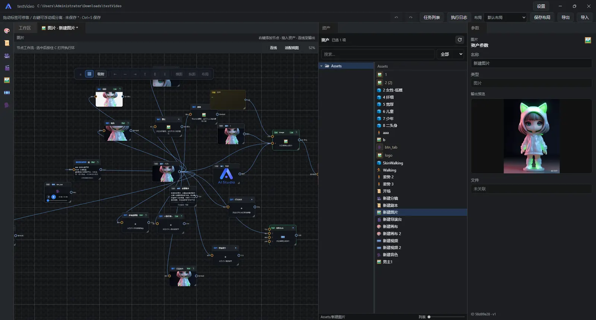

Tutorial · Quickstart
Quickstart
From installation to your first finished cut, without building a single node by hand. Work through this page and you'll be able to run a complete AI generation pipeline on your own — and know where every other feature lives.
1. What you need
- An API key for at least one model provider. The app ships with no built-in models: text, image and video generation all run through your own provider account (OpenRouter, DeepSeek, Zhipu, Volcengine Ark, Kling, MiniMax, Tongyi Qianwen, …). For your first run, prepare one text model plus one image model and add video models later.
- An empty directory on your machine to hold your projects. Every asset and every result stays on your own disk.
- About 15 minutes. Most of that goes into the first-time model setup; every run after that takes about 2 minutes.
2. Install and launch
- Grab the installer for your platform from the download page (Windows / macOS Intel / macOS Apple silicon / Linux).
- Follow the on-screen steps to finish installing. If your OS security policy blocks the first launch, just allow the app to run in system settings.
- Launching takes you to the home page. There is no traditional menu bar: the top-left logo returns home, and the gear in the top-right opens Settings.
3. Connect a model provider (the crucial step)
Get this right and you'll hit almost no errors afterwards. Open Settings → Models from the top-right:
- Click Add model provider, pick your provider, paste the API key and save.
- Click Fetch models, then tick the models you want to use.
- Assign the default models one by one: the text model (storyboard planning and prompt rewriting), the image model (images) and the video model (motion video). The three may come from different providers.
- Make sure the account balance is sufficient — an insufficient balance fails generation outright, and it's the most common problem for newcomers.
Optional: configure object storage
Under Settings → Object storage, enable one of Volcengine TOS / Alibaba Cloud OSS / Tencent Cloud COS (only one can be enabled at a time). It's only required when you need video URLs or reference videos; you can skip it entirely for purely local image generation.
4. Create a project
- Back on the home page, click New Project.
- Fill in the project name, then click Browse to choose the storage directory (pick an empty folder).
- Click Create to enter the workspace.
A project.json is written to the project root; you can reopen the project any time with
“Open Project”. Copy the whole folder to back it up or move it to another machine.
5. Generate a pipeline from a template
This is the quickest path in the app: no node dragging, no wiring — pick a template and the system lays out the whole generation chain for you.
- Click One-Click Workflow in the top bar.
-
Pick one of the preset templates. For your first run we suggest:
- Short-drama storyboard — the complete script → shots → video pipeline, and the best showcase of what the app can do;
- Storyboard to film — use it when you just want a batch of storyboard images fast;
- Product ads / e-commerce livestream — for product images and ad variants.
- You can also describe your goal in plain language in Workflow description — for example “one product selling point → 3 storyboard images → 15-second vertical video” — and let the AI plan it.
- Click Preview template to inspect the generated nodes and link topology; when you are happy with it, click Create workflow.
- Choose a save directory and name, and a new host asset appears in the asset library — that is your finished pipeline.

6. Run it and get your first cut
- Drag the host asset you just created from the asset library onto the canvas.
- Feed the inputs: paste a story into the script node, or write a one-line premise in a “Text” node.
- Select the host node or one of its output ports and click Add to tasks (or right-click → “Run”); the whole chain executes in order.
-
Inspect each step's output in the Inspector on the right; gallery nodes let you
switch between history entries, and the one you select becomes the
outoutput. - Once you have your video or images, open the final timeline, drag the media onto tracks, then preview and export the cut.
A faster route for short dramas
If you picked the short-drama storyboard template, open the Agent flow window with Episode Pipeline in the top bar and work through storyboards, tiling, director review and video generation step by step inside it — no need to go back to the node graph and operate node by node. See the Short-Video Guide for details.
7. Where to go next
You've now run a complete chain. Pick your next step based on your goal:
8. Stuck? Start here
Runs fail immediately, or it says the balance is insufficient
Nine times out of ten it's the provider account: check that the balance is sufficient, the key is correct and the model is ticked and enabled. Running the same node with a different model tells you quickly whether it's an account problem or an app problem.
Links won't connect — it says the types don't match
Ports distinguish singular from plural strictly: image can't go
into images. When a list input is required, wire from the upstream
square port (out-all) — the round out port won't
connect.
Characters change faces; shots don't match each other
Fix it with reference images rather than longer descriptions: use an anchor image to lock the face and costume, or register the character as a world element shared across scenes. See Core concepts.
More questions
The full list lives in the manual's Troubleshooting chapter (sorted by how often they come up). If it's still unresolved, reach out in QQ group 647306826 or on GitHub Issues.